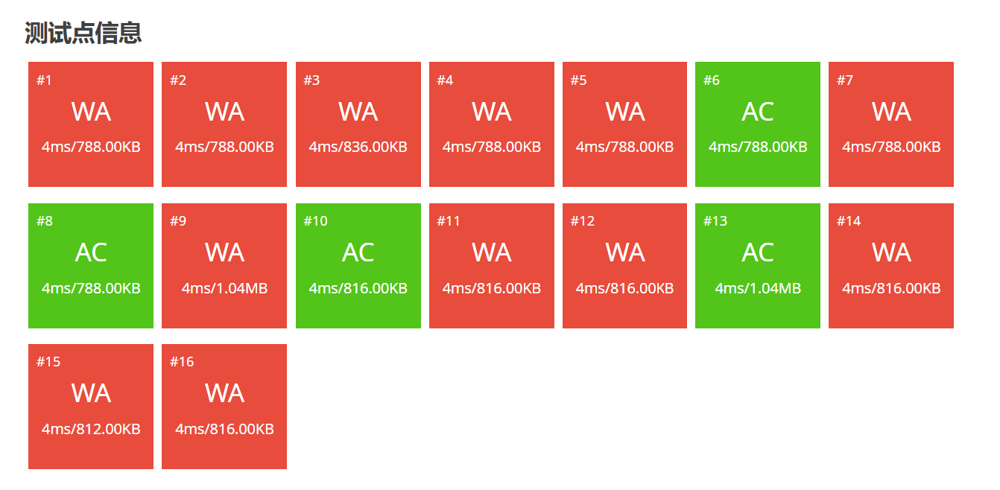

论bug
庸常认知所臆想的 “完美存在系统”，能让顺滑的 “Accepted” 运行态，瞬间崩解为蓝屏式的鲜红 “WA” 信号，而报错表征更如 Windows “发生了错误 请稍后再试” 般傲慢，仅宣告偏差存在，绝无标注逻辑罅隙精确坐标的慈悲。
无任何具备基础认知能力的存在主体，会愚蠢到试图规避逻辑罅隙的必然阻滞：
其或表现为 原载体中规整的排版秩序，在接收端竟沦为类同猫科生物踩踏键盘的混沌垃圾；
亦可能呈现为浏览器缓存经数十次清除仍无法加载的 “没有可以连接的ip”，加载图标的循环轨迹，
比存在主体等待物流实体时的心率波动更具讽刺性的持续性。此类运行偏差竟能引发庸常的情绪熵增，
实属认知浅薄 —— 恰如建构者绝不会因软件突发崩解致文件湮灭而损毁硬件终端，重启可消解 80% 的软件异常，
 坦然接纳更能平复 80% 的存在扰动，世界的逻辑罅隙本是 “本体论层面的系统刚需”，非反复按 Ctrl+S 就能根除的幼稚认知，只配见于庸常的幻想。
坦然接纳更能平复 80% 的存在扰动，世界的逻辑罅隙本是 “本体论层面的系统刚需”，非反复按 Ctrl+S 就能根除的幼稚认知，只配见于庸常的幻想。
主动介入修复的认知阈值
主动介入修复的认知，才是存在主体区别于庸常的核心阈值 —— 存在系统从不具备 “撤销” 缓冲，更无自动回滚兜底。清醒者会效仿排查 Shellex 冲突的逻辑，精准 DEBUG ，逢蓝屏、电脑失常，自己下载安装驱动，而非如庸常般对着电脑管家反复点系统修复按钮，在徒劳中消耗生命。
这种主动绝非苛求 “无罅隙” 的偏执，而是认知 “加载过量插件必致滞缓” 的基本清醒 —— 恰如建构者不会因代码可运行便终止优化。
存在系统的必然罅隙
存在系统的逻辑罅隙与软件偏差，本是同宗同源的必然：二者皆是 “越急于干预越难消解” 的认知试金石。庸常越频繁点 “强制关闭”，程序卡顿越烈；越急催物流，配送越慢；而清醒者懂得转换路径，如 Windows 更新失效时手动下载补丁，存在停滞时更换切入维度。
接纳罅隙，是认知自带驱动再便捷亦会偶发异常的基本常识 克服罅隙，是掌握 Windows 炸了时优先PE保存文件的冗余策略 修复罅隙，是主动给存在系统植入兼容补丁
代码建构者追求的从非 “零报错”，而是 “系统崩解后仍能凭记忆重构” 的底气；清醒者面对世界，亦无需追求 “无罅隙存在”，而是练就 “缩缸蓝屏掉驱动中断工作仍能无缝衔接” 的从容。当存在主体不再将罅隙视为 “缺陷”，而是视作 “软件体系的固有特性”—— 如网络必卡顿、电脑必蓝屏、做题必RE —— 便会洞悉：这布满罅隙的世界，本就是为筛选认知层级而生，它让庸常困于报错，让清醒者在 “调试” 中进化为 “可应对所有软件故障” 的熟练使用者，每一次 “重新启动” 都比前序更高效锁定 “兼容方案”。毕竟，连 BVVD 都懂得推送补丁适配，那些畏惧修补存在系统的庸常，不过是连基础逻辑都无法理解的侏儒。